A devoted Vedic scholar committed to performing authentic Hindu rituals and sacred ceremonies. With deep
knowledge of Shastras and years of dedicated practice, Pandit Keerthi Bharadwaj brings divine blessings to every
occasion.
11+ Years of experience in Vedic rituals & ceremonies
🗣️
Fluent in Kannada, Hindi & English
🪔
Many Ceremonies performed with devotion
📖
Expertise in Pooja, Homam, Jyotishya, Alankara & Vedika Seva
📍
Available across Karnataka & nearby states
✓100% Shastraic Mantras
✓Subha Muhurtha Guidance
✓Samagri List Provided
✦ ✦ ✦
Our Sacred Services
Performing authentic Vedic rituals with devotion and precision for every occasion
in life.
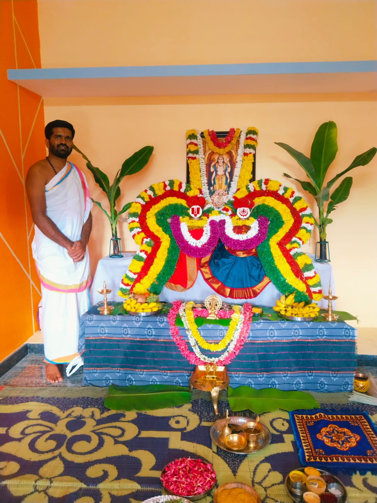
🪔
Pooja & Vrata
Satyanarayana Pooja, Mahalakshmi Vrata, Shiva Rudrabhisheka, Sankashti Ganesha, Durga & Saraswati Pooja performed with authentic Vedic mantras.
Book Now
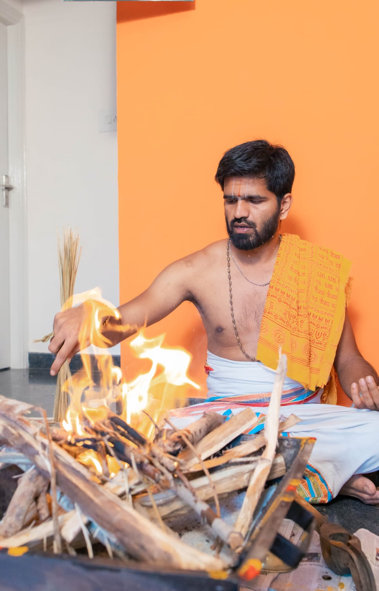
🔥
Homam & Havan
Maha Ganapati Homam, Sudarshana Homam, Navagraha Homam, Maha Mrityunjaya Homam, Chandi Homa, and Ayushya Homam for health, success, and divine protection.
Veda Samhita Parayana, Bhagavata Saptaha, Valmiki Ramayana, Vishnu Sahasranama, and traditional spiritual scripture discourses.
Book Now
🙏
Pitru Karyas & Shraddha
Sacred ancestral rites, Pitru Tarpanam, Shraddha rituals, Mahalaya Pitru Paksha ceremonies, and Tila Homa performed with complete reverence.
Book Now
Sacred Directory
Complete List of Poojas by Category
Explore our full catalog of sacred ceremonies organized by traditional Vedic categories for festivals, life events, homams, remedies, and ancestral blessings.
🛕
Samskara
Devata Pratishthapane (Idol Consecration)
Sacred Prana Pratishtha, Vigraha Pratishthapane, and temple/home mandir idol consecration with Shodashopachara and Veda Mantras.
Divine Presence & Sanctity
💍
Samskara
Vivaha Prayoga (Vedic Wedding Rituals)
Authentic Kannada Vedic wedding ceremonies: Nandi, Kanyadaana, Mangalya Dharana, Saptapadi, and Laja Homa by experienced Purohits.
Marital Bliss & Longevity
👶
Samskara
Namakarana (Baby Naming Ceremony)
Sacred Vedic naming ceremony for newborns calculated by Janma Nakshatra, Pada, and Gotra with Ayushya blessings for the baby.
Auspicious Identity & Health
🤱
Samskara
Seemantonnayana (Seemantha / Baby Shower)
Sacred prenatal Vedic Samskara ensuring the expectant mother's health, emotional peace, and the unborn child's divine well-being.
Safe Delivery & Mother-Child Well-being
⛏️
Samskara
Bhoomi Puja (Groundbreaking & Site Puja)
Groundbreaking ceremony invoking Bhoomi Devi, Vastu Purusha, and Digpalakas before laying foundation to ensure obstacle-free construction.
Obstacle-Free Construction
🏡
Samskara
Gruhapravesha (Housewarming Ceremony)
Complete housewarming rituals: Go-Pooja, Dwara Pooja, Ganapati Homa, Vastu Homa, Navagraha Homa, and Ksheera Utthana for your new home.
Auspicious New Beginning & Prosperity
📐
Samskara
Aaya Nirnaya (Vastu Ayadi Calculation)
Traditional Vastu Shastra Ayadi mathematical calculations (Dhwaja, Simha, Vrishabha Aaya) for perimeter, doors, and room harmony.
Flawless Vastu Dimensions
🧭
Samskara
Vastu Pratishthapana (Vastu Shanti Consecration)
Consecration of Vastu Yantra, directional pyramid energization, and Vastu Purusha Pratishthapana eliminating architectural and structural doshas.
Architectural Energy Balance
🔮
Samskara
Jataka Vimarsha (Horoscope & Kundali Reading)
In-depth Vedic Janma Kundali analysis, planetary periods (Dasha-Bhukti), career guidance, health, marriage timelines, and effective remedies.
Authentic 8-fold Ashtakoota (36 Gunas) and Dashakoota compatibility analysis, Manglik / Kuja Dosha, and Rajju-Vedha examination for marriage.
Harmonious Marital Compatibility
🐘
Sacred Fire
Ganapathi Homa (Maha Ganapati Fire Ritual)
Consecrated fire ceremony invoking Lord Maha Ganapathi with Ashtadravya and Modakas to dissolve all obstacles and grant success in every endeavor.
Total Obstacle Removal & Success
🪐
Sacred Fire
Navagraha Homa (9 Planetary Appeasement)
Appeasing the 9 planetary deities with their specific sacred twigs (Samidhas), grains, and Vedic hymns to mitigate planetary malefic periods.
Planetary Peace & Good Fortune
🔱
Sacred Fire
Mrutyunjaya Homa (Maha Mrityunjaya Fire Ritual)
Powerful fire sacrifice invoking Lord Shiva with the Maha Mrityunjaya mantra using Amrita herbs for healing chronic diseases and protection from untimely perils.
Health, Healing & Protection
🪷
Sacred Fire
Lakshmi Narayana Homa (Abundance & Harmony)
Joint invocation of Goddess Mahalakshmi and Lord Maha Vishnu for perpetual abundance, financial growth, household peace, and commercial prosperity.
Potent Vaishnava havan invoking Lord Sudarshana's fiery discus to eradicate evil eye (Drishti), unseen negative energies, fear, and enemy afflictions.
Shield from Evil Eye & Negative Energies
🌿
Sacred Fire
Dhanvantari Homa (Divine Physician Health Ritual)
Sacred fire oblation offering rare medicinal herbs to Lord Dhanvantari, the primordial physician of the Gods, restoring vitality and physical wellness.
Recovery from Illness & Radiance
🔥
Sacred Fire
Ayushya Homa (Longevity & Vital Energy)
Vedic ritual invoking Ayur Devata and the Chiranjeevis on birthdays, 60th/70th/80th milestones, and post-illness for sustained longevity and vigor.
Combined worship of Goddess Mahalakshmi and Yaksharaja Kubera to clear debts, unlock blocked finances, and ensure steady business income.
Financial Growth & Debt Clearance
🧱
Sacred Fire
Vastu Homa (Residential & Commercial Purification)
Homa pacifying the 45 deities of Vastu Mandala and Vastu Purusha, neutralizing negative directional energies and welcoming positive vibrations.
Space Purification & Harmony
🌾
Sacred Fire
Tila Homa (Sacred Sesame Fire Oblations)
Sacred black sesame fire oblations performed at Srirangapatna Kaveri bank or home to satisfy departed souls and remove deep Pitru Dosha.
Ancestral Satisfaction & Relief
🦁
Sacred Fire
Durga Homa (Divine Courage & Protection)
Consecrated fire ritual to Goddess Durga invoking spiritual strength, fearless heart, removal of anxiety and depression, and victory over adversaries.
Courage & Divine Protection
⚡
Sacred Fire
Chandika Homa (Maha Chandi Yajna)
The grandest Vedic fire sacrifice with full 700 verses of Durga Saptashati, Navakshari mantra, and Suvasini puja for total victory and majesty.
Supreme Triumph & Prosperity
🔥
Sacred Fire
Pratyangira Homa (Ultimate Occult & Enemy Shield)
Fierce Ugra Devata havan offering dried red chillies to incinerate severe occult attacks, black magic, jealousy, drishti, and hostile forces.
Complete Shield from Hostile Forces
🐍
Sacred Fire
Sarpa Homa (Naga Devata Fire Ritual)
Appeasing the Ashta Kula Nagas (Ananta, Vasuki, Shesha, etc.) through consecrated fire to remedy serpent curses, skin issues, and fertility delays.
Progeny Blessing & Naga Shanti
🪔
Festival / Vrata
Satyanarayana Vrata & Katha
Complete Sri Satyanarayana Swamy Pooja with Kalasha Sthapana, 5-chapter sacred Katha recitation, and Mahaprasada distribution for family peace.
Family Peace & Abundance
🌸
Festival / Vrata
Varalakshmi Vrata (Shravana Soubhagya Puja)
Celebrated on auspicious Shravana Friday worshiping Goddess Varalakshmi with Doragranthi tying, Kalasha adornment, and Suvasini Pooja.
Soubhagya & Marital Prosperity
🕉️
Festival / Vrata
Kedareshwara Vrata (Deepavali Sacred Nompi)
Auspicious Deepavali Amavasya vrata dedicated to Lord Shiva and Parvati with 21 strands of consecrated thread for the fulfillment of all desires.
Desire Fulfillment & Divine Grace
🐍
Dosha Nivarana
Sarpa Samskara (Srirangapatna Kaveri Bank)
The most revered remedy for accidental or ancestral snake afflictions performed on the sacred Kaveri bank at Srirangapatna with formal serpent obsequies.
Complete Naga Dosha Expiation
🎨
Dosha Nivarana
Ashlesha Bali (Naga Mandala Pooja)
Intricate Naga Mandala rangoli ritual performed on Ashlesha Nakshatra with milk and red paste offerings to eliminate Kuja and Sarpa Doshas.
Fertility & Marital Harmony
🗿
Dosha Nivarana
Naga Pratishte (Stone Serpent Consecration)
Consecration of stone serpent deity (Naga Shilanyasa) beneath sacred Ashwatha & Neem tree platforms with Prana Pratishtha and milk Abhishekam.
Lineage Blessings & Health
⏳
Dosha Nivarana
Kala Sarpa Dosha Shanti (Rahu-Ketu Pacification)
Specialized Vedic ritual pacifying Rahu and Ketu when all planets are hemmed in between them, removing recurring setbacks, career delays, and hurdles.
Removes Career Delays & Setbacks
🙏
Ancestral Rites
Narayana Bali (Moksha for Unnatural Deaths)
Powerful Vedic ritual at Srirangapatna Kaveri bank invoking Lord Vishnu to liberate souls who suffered unnatural, sudden, or untimely deaths.
Moksha for Trapped Ancestral Souls
🌊
Ancestral Rites
Pinda Pradhana & Asthi Visarjana (Srirangapatna)
Sacred mortal remains immersion and cooked rice-sesame ball oblations at Kaveri Paschima Vahini granting eternal peace to three generations of ancestors.
Ancestral Peace & Eternal Gratitude
🕊️
Ancestral Rites
Tripindi Shraddha (Generational Curse Relief)
Three consecrated pindas offered to Satva, Rajas, and Tamas souls, resolving long-standing generational ancestral unrest and family stagnation.
Resolves Generational Pitru Dosha
🐄
Dosha Nivarana
Gomukha Prasava Shanti (Ganda Moola Birth Remedy)
Sacred ritual performed when a child is born in inauspicious asterisms (Jyeshtha, Moola, Ashlesha, Magha) through symbolic cow passage and Veda chants.
Child Longevity & Family Prosperity
✨
Dosha Nivarana
Nakshatra Shanti (Janma Nakshatra Homa)
Planetary and presiding deity worship of the birth asterism to dispel malefic influences, strengthen personal aura, and enhance lifelong fortune.
Aura Strengthening & Good Fortune
✦ ✦ ✦
Sacred Kshetras & Coverage
Serving Srirangapatna, Mysore, Mandya & Across Karnataka
Available for sacred riverbank rituals at Kaveri Paschima Vahini, home ceremonies, apartment poojas, and temple homams with complete Vedic authenticity.
🌊
Srirangapatna (ಶ್ರೀರಂಗಪಟ್ಟಣ)
Kaveri Paschima Vahini & Sacred Sangama
World-renowned for Kaveri Paschima Vahini ancestral and dosha remedies. Expert purohit for Sarpa Samskara, Narayana Bali, Pinda Pradhana, Asthi Visarjana, Tila Homa, and Tripindi Shraddha on the sacred Kaveri banks.
Complete home, mandapam, and temple rituals across Gokulam, Vijayanagar, Kuvempunagar, JP Nagar, Jayalakshmipuram, and Nanjangud Kapila Sangama for Gruhapravesha, Vivaha Prayoga, Maha Ganapathi, and Vastu Homa.
Home-visit Vedic purohit across Hassan city, Belur, Halebidu, Alur, Arkalgud, and Sakleshpur for Gruhapravesha, Devata Pratishthapane, Vastu Pratishthapana, Sudarshana Homa, and Kundali analysis.
Authentic Vedic ceremonies across Chamarajanagar town, Gundlupet, Kollegal, Yelandur, and Male Mahadeshwara belt for Ayushya Homa, Dhanvantari Homa, Navagraha Shanti, and traditional family rituals.
Serving families in Channarayapatna town, Bagur, Nuggehalli, and NH-75 highway corridor for Seemantonnayana, Namakarana, Gruhapravesha, Sudarshana Homa, and Satyanarayana Vrata.
Dedicated rituals across Malavalli town, Marehalli, Belakavadi, and Muttatti Kaveri riverbank for ancestral rites, Ashlesha Bali, Satyanarayana Vrata, and family Vratas.
Everything you need to know about booking rituals, ceremonies at Srirangapatna, and Vedic services in Mysore & Mandya.
?
How do I book Pandit Keerthi Bharadwaj for ceremonies in Srirangapatna, Mysore, or Mandya?
You can book easily by clicking the "Book Now" button on our website, calling us directly, or sending a message on WhatsApp. We will discuss the auspicious date (Muhurtha), specific ritual needs, and provide the complete list of samagri required.
?
Which Pitru Karyas are performed at Srirangapatna Paschima Vahini?
Srirangapatna's Kaveri Paschima Vahini is one of the most sacred spots in India for ancestral liberation. We conduct Asthi Visarjana, Pinda Pradhanam, Narayana Bali, Tripindi Shraddha, Tila Homa, Mahalaya Paksha Shraddha, and Amavasya Tarpanam with complete Vedic sanctity.
?
Does the Pandit travel to our home in Mysore, Mandya, or Bangalore for Griha Pravesha and Homams?
Yes. Pandit Keerthi Bharadwaj regularly travels to homes, apartments, commercial sites, and marriage halls across Mysore, Mandya, Bangalore, and all Karnataka districts for ceremonies.
?
Do you arrange all the Pooja Samagri and Homa Kunda materials?
Yes. We provide a clear itemized list of fresh items for the family to keep ready (fruits, flowers, coconuts), and we can also arrange the specialized sacred samagri, dry herbs (Samidhas), homa dravyas, and copper homa kunda upon prior request.
?
Which Dosha Pariharas are performed (Sarpa Dosha, Vastu Dosha, Kalsarpa)?
We perform Shastraic pariharas including Naga Pratishtha, Ashlesha Bali, Sarpa Samskara, Kala Sarpa Dosha Nivarana, Navagraha Shanti, and complete residential/commercial Vastu Shanti with Vastu Mandala installation.
?
Do you provide Jyotishya (Astrology) and Subha Muhurtha consultations?
Yes. We offer authentic Vedic astrology consultations including Janma Kundali analysis, Vivaha horoscope matching, auspicious Muhurtha calculation for housewarmings and weddings, and planetary remedies.
✦ ✦ ✦
Sacred Moments
A glimpse of the divine ceremonies and sacred rituals performed with devotion and
authenticity.
Alankara
Royal Flower Canopy Alankara
Grand Floral Adornment & Kalasha Pooja
Homam
Sacred Fire Offering
Vedic Havan with Consecrated Agni
Mandala
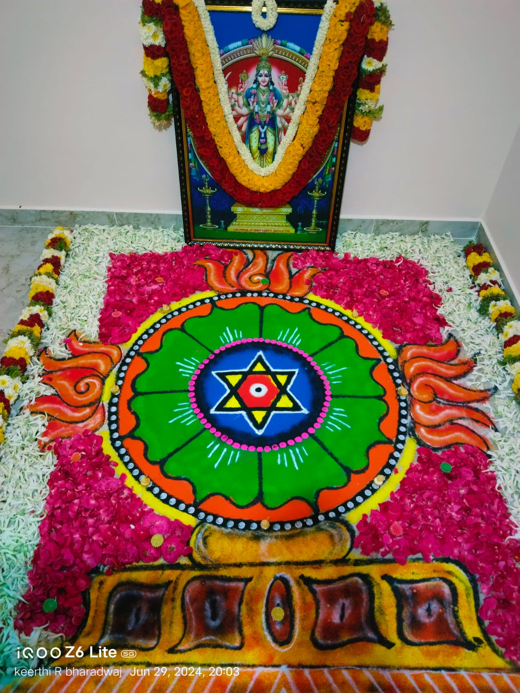
Sudarshana Yantra Mandala
Sacred Geometry for Divine Protection
Ceremonies
Pandit Keerthi Bharadwaj
Vedic Chanting & Mantrocharana
Homam
Grand Maha Yajna
Multi-Priest Vedic Fire Consecration
Alankara
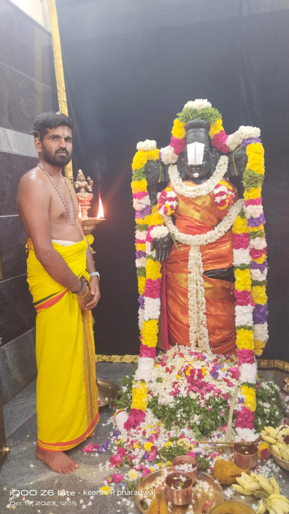
Sri Srinivasa Alankara
Lord Venkateshwara Deity Floral Adornment
Mandala
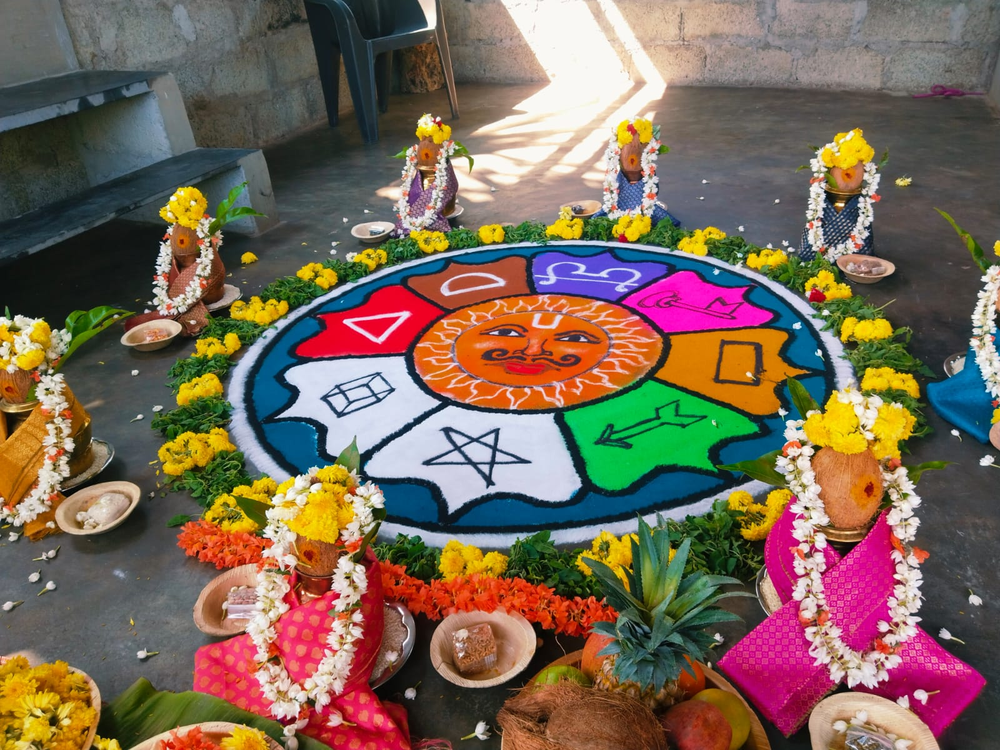
Navagraha Mandala
9 Planetary Mandalas & Sacred Kalashas
Ceremonies
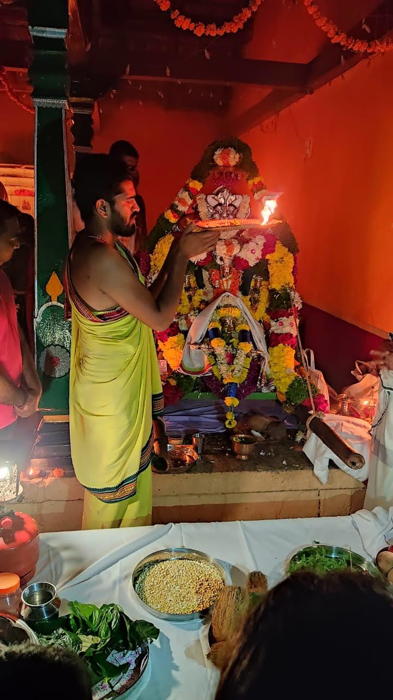
Maha Mangalarathi
Sacred Deeparadhana & Harathi Offering
Alankara
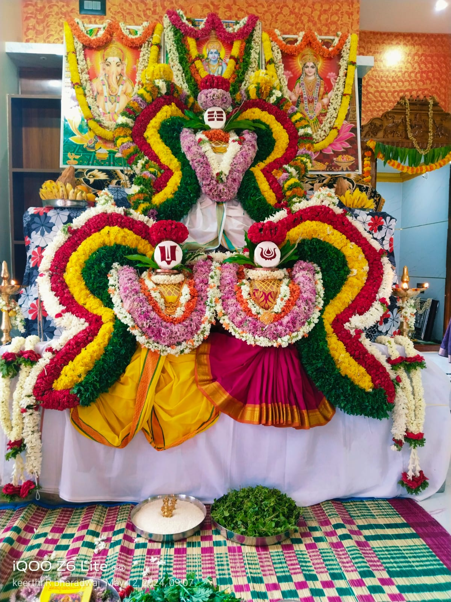
Satyanarayana Kalasha Alankara
Divine Floral Garlands & Vastram
Mandala
Naga Mandala Shanti
Sarpa Dosha Nivarana Sacred Rangoli
Ceremonies
Griha Pravesha Blessing
Phala Samarpana & Housewarming Rituals
Homam
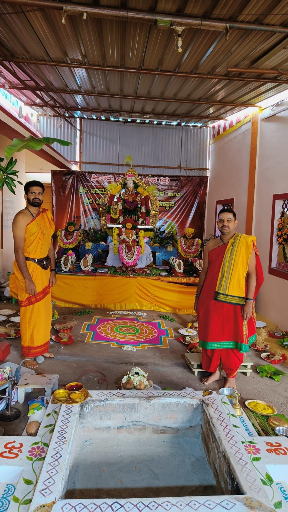
Consecrated Homa Kunda
Temple Utsava Mandapa & Altar
Mandala
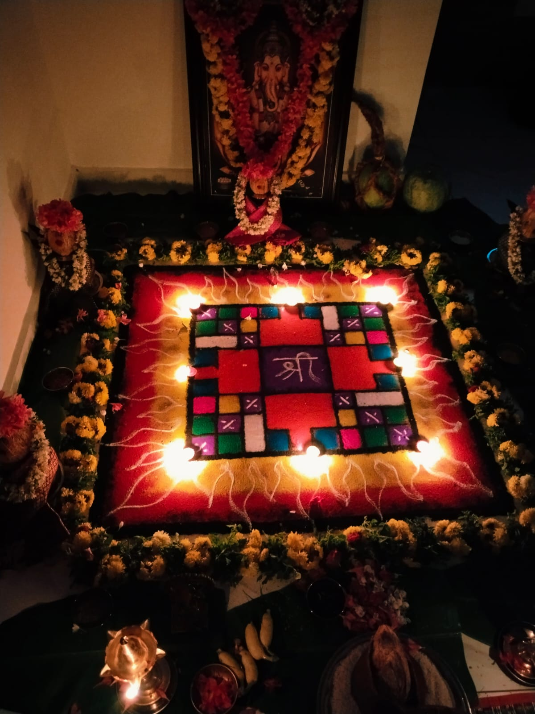
Sarvatobhadra Deepa Mandala
Sacred Geometric Mandala with Oil Lamps
Alankara
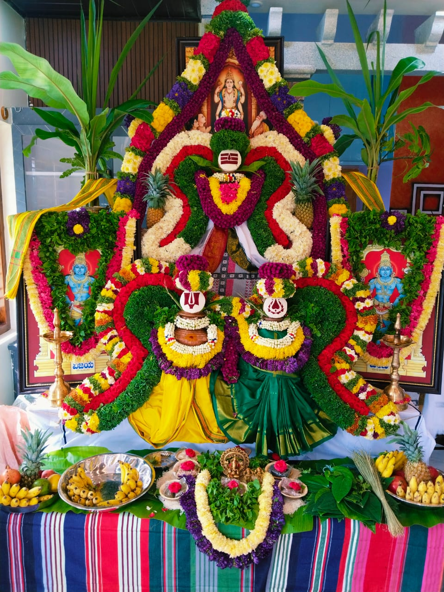
Utsava Floral Prabhavali
Intricate Floral Arch & Fruit Offerings
Ceremonies
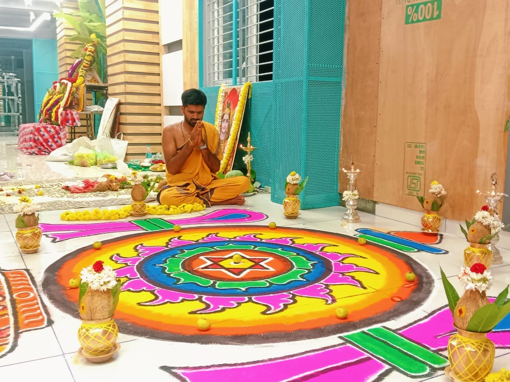
Vastu & Sudarshana Dhyana
Mantra Japa & Consecration Prayer
Ceremonies
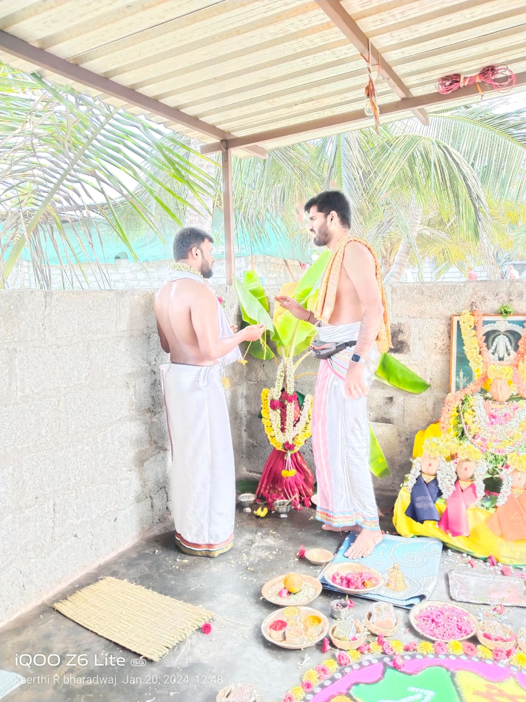
Vedic Samskara Ritual
Authentic Shastraic Rites & Sankalpa
✦ ✦ ✦
Get in Touch
Reach out to us for booking ceremonies, consultations, or any queries about our
sacred services.
Let's Connect
Whether you need a pandit for a special occasion, astrology consultation,
or any Vedic service — we are here to help. Reach out via phone, email, or WhatsApp.